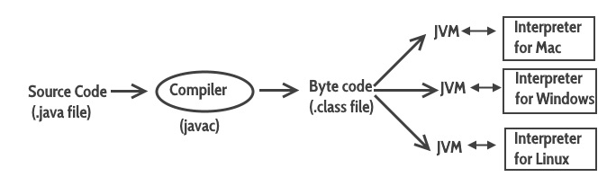

Java
Features
JDK
JRE
JVM
javac compiler

Datatypes
Categories:
1. object-oriented
1. r defined by classes.
2. non-object-oriented (primitive)
1. Integers
1. byte
2. short
3. int
4. long
2. floating-point
1. float
2. double
3. characters
1. char
4. boolean
1. boolean
Variables
- Local variable
- Static (or class) variable
- Instance variable
Operators
IF statement
Switch Case statement
For loop
While loop
do-while loop
continue statement
break statement
Constructor
Types of constructor [ref]
What if you implement only parameterized constructor in class
Static class, block, methods & variables [ref]
Inheritance [ref] (uses extends)
super [ref]
Interface [ref]
Exception Handling [ref]
Collections [ref]
- ArrayList [ref] [ref]
I/O
* two types of I/O streams: byte and character.
* Byte Stream Classes :
1. InputStream
2. OutputStream
* Character Stream Classes:
1. Reader
2. Writer
Books:
[https://www.amazon.com/Java-Beginners-Guide-Herbert-Schildt/dp/0071809252] Java A Beginner's Guide (Sixth Edition) Herbert Schildt
Reference:
[https://www.javatpoint.com/java-string-to-date]
[https://beginnersbook.com/java-tutorial-for-beginners-with-examples/] Java tutorial: Learn Java Programming with examples
[https://www.callicoder.com/categories/java/] Java Tutorials
[https://docs.oracle.com/javase/tutorial/getStarted/intro/definition.html]
[https://www.theserverside.com/blog/Coffee-Talk-Java-News-Stories-and-Opinions/How-to-become-a-good-Java-programmer-without-a-degree] How to become a good Java programmer without a degree
Forums:
[https://www.theserverside.com/discussions/]